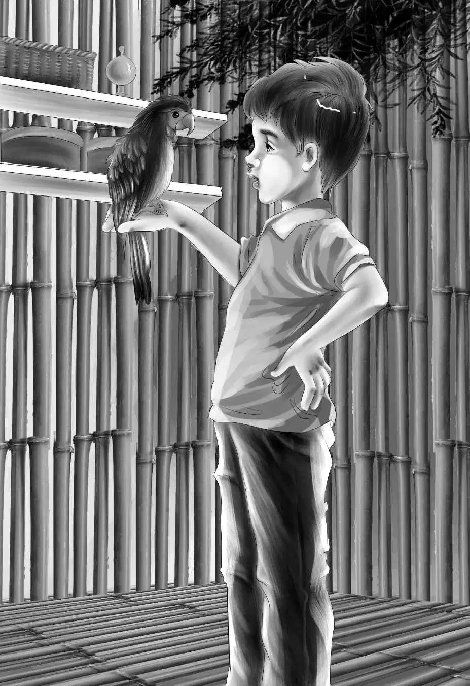

Grandfather was thinking. He said,"Benny,you must not think that Peter's mother is your teacher,just because she had the same name. There are many people named Horn."
Lars said,"What happened to Mr.Anderson?"
"I don't know," said Peter. "He said he was going swimming near a sandy beach,but he never came back."
"Do you mean a very green bay?"asked Mike.
"No,I mean the one on the other side of it,where the boat is."
Nobody said a word. But everyone thought,"Shark Bay! How lucky we were to have Lars with us!"
Jessie said suddenly,"Are you hungry,Peter?"
"Not very," said Peter. "But you do have some more crackers,don't you? You see they make me think of bread. I haven't had any bread for six months."
"Six months!" cried Violet.
"That's why I took the crackers,Mr. Lars," said Peter.
"That's all right," said Lars. "Don't worry."
"I did worry," said Peter,"when I saw you were blaming that other boy."
"Me," said Mike.
"Yes,Mike,I am awfully sorry."
"Think nothing of it!" said Mike. "Come on,Ben!"
The two boys raced for the sea biscuit. It was such fun to see Peter eat crackers. He seemed half starved.
"Wait till you see what we have for supper," said Benny. "We're going to have stew and a pudding!"
"A pudding? Oh,yes,I remember what a pudding is," said Peter. He stopped eating for a minute. "A pudding is sweet."
"Yes," said Mike. "Ours is made of coconut milk,sugar cane,and bananas."
"Sounds good," said Peter. "My mother used to cook good things. I hope we can find her."
"Well,if Grandfather can't find her,nobody can," said Benny. "He has ways."
Mike said suddenly. "You can have my blanket,Peter."
Peter said,"You are a very kind boy,Mike. But I wouldn't know what to do with a blanket. I can sleep on a rock. I am hard all over."
"You must show us how to climb trees," said Henry.
"It's easy," said Peter,"if there is something you want at the top of the tree."
Mr. Alden was listening to all this. He was wide awake now. He watched Peter carefully. "A good boy," he thought. "Just think of one of our children living here for six months!" He shook himself. He had a plan which he did not tell to anyone. But he told them all,"Now we have eight in the family."
It was a happy family at supper. Lars gave his spoon to Peter. He took the big cooking spoon himself. They all began to eat meat stew.
All at once a voice said,"Look out,it's hot!"
"Who said that?" cried Mike.
"It's old Myna," said Peter. He made a funny noise with his mouth and down flew a dark purple bird. It had white on its wings and orange on its head.
"Hello,Myna," said Peter.
"Hello,Peter," said Myna.
"Oh,make him say something about me!" begged Mike.
"Her," said Peter. He took the bird on his finger and said,"Myna,say ‘What's the matter,Mike?'"
The bird said nothing.

"She won't talk for us," said Benny. "She is afraid."
"Oh,no,she's not afraid," said Peter. "She has to study every new word."
Peter said it again two or three times. He fed the bird a piece of meat.
"Look out,it's hot!" said Myna. Then she went right along without stopping,"What's the matter,Mike?"
Mike was delighted. "What a talker!" he said "Maybe we could teach her to sing."
"Oh,she can sing already," said Peter. "Myna,sing ‘My country,'tis of thee.'" He hummed it.
Sure enough,Myna sang it right after him.
"She's wonderful," said Henry.
"She's got a funny voice when she sings," said Mike.
"So have some people," said Benny. "Her singing voice is different."
Henry said,"Soon we'll have to think about the ship's coming. I mean get our things ready. My shoes are almost worn out."
"I never had any shoes here," said Peter. "I didn't have time to put them on the night the ship was wrecked. Feel my feet,Benny."
Benny did so. "Oh,your feet are as hard as rocks! Really,Henry,feel them."
Henry said,"Yes,they are just like a dog's foot. You have been climbing trees and rocks for so long, Peter. It will be terrible for you to wear shoes."
"Yes,but I'd like some new shoes," said Peter. "I used to dream of having new shoes."
Then they tried the pudding. It was delicious.
When supper was over,Peter began to teach them to climb trees. "Oh,you have to take off your shoes," he said.
Henry tried it a few times,and did very well. "It is much easier without shoes. Soon my feet will be as hard as yours,Peter."
"That will take a long time!" said Peter. "And I hope we won't stay here that long."
When they went to bed that night,old Myna went to sleep first. For the first time in three weeks,nobody was watching from the trees.
Out on the great ocean the Sea Star was coming nearer and nearer. Captain Brown smiled to himself. He laughed when he thought of Benny and Mike. He didn't know that there was another boy now,named Peter Horn.